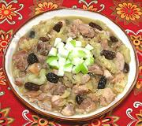

|
Chicken with Apples & RaisinsSpain - Granada - Pollo con Manzanas y Pasas | ||||
| Serves: Effort: Sched: DoAhead: |
4 main *** 1-1/2 hrs Yes |
From Granada in the southern province of Andalucia, Moorish Al-Andalus, this chicken shows a definite Moorish influence. It is very flavorful and sure to generate comment, but quite easy to make. | |||
|
|
2 1/2 10 1 1/4 2 3/4 1/3 1/3 |
# t oz # c T c t t |
Chicken meat (1) Salt Onion Apples (2) Raisins Olive Oil Wine, dry white Salt Pepper |
Prep - (20 min)
|
dmc_chkapl1 141213 drcs375 - www.clovegarden.com
©Andrew Grygus - info@clovegarden.com - linking to
and non-commercial use of this page permitted